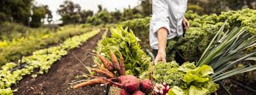

A alimentação sustentável busca práticas que respeitam o meio ambiente e os direitos sociais, promovendo uma produção de alimentos saudável e de baixo impacto ecológico.
A produção alimentar tem um grande impacto sobre o meio ambiente. Adotar práticas sustentáveis é essencial para reduzir a degradação ambiental e garantir um futuro saudável para as próximas gerações.
A alimentação sustentável é uma peça-chave para um futuro mais verde e saudável. Com pequenas ações no nosso dia a dia, podemos contribuir para a preservação do meio ambiente e para a saúde do planeta.